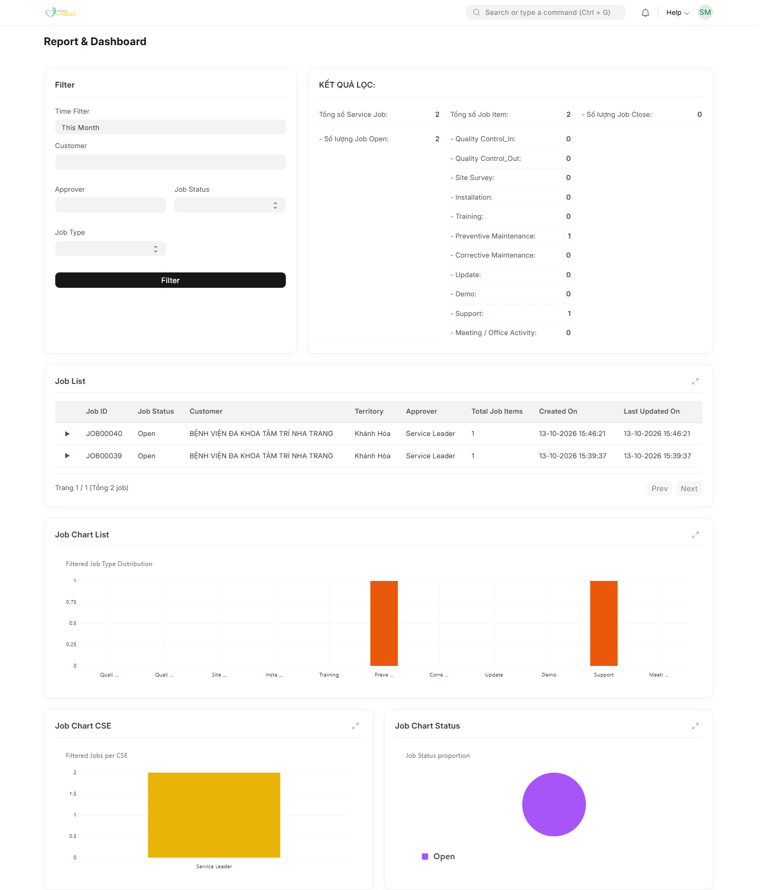
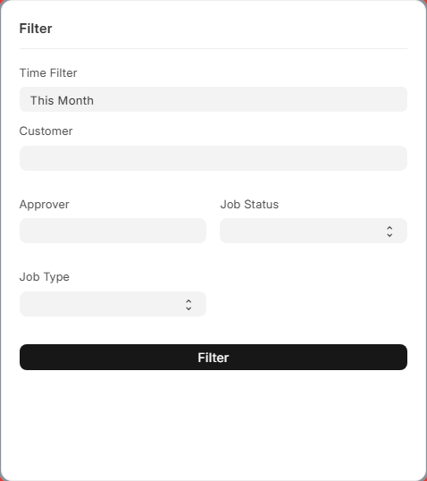
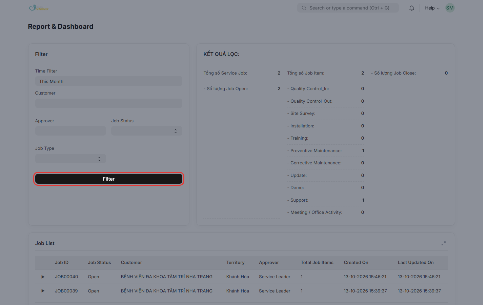
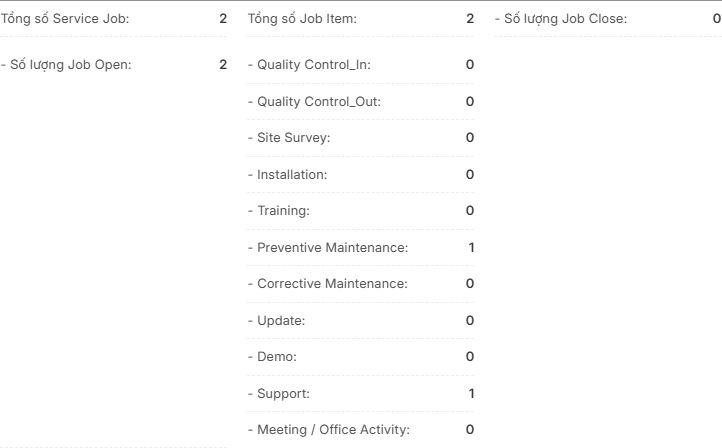
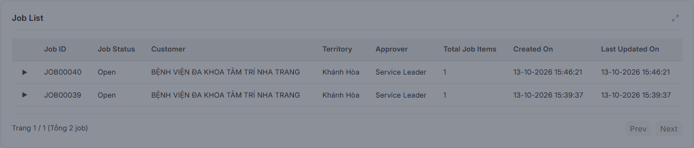
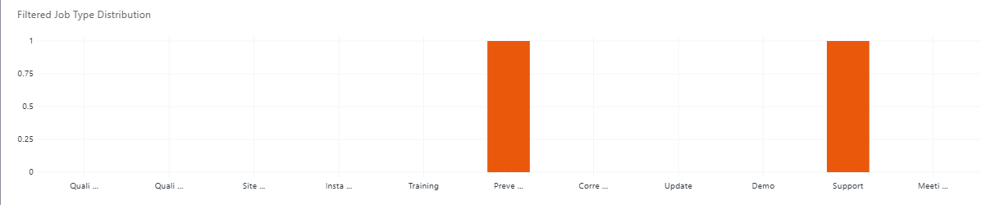
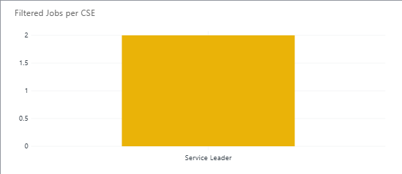
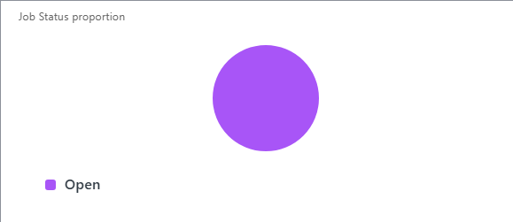

Mục đích
Service Job Report (tiêu đề trên màn hình: Report & Dashboard) giúp lãnh đạo và trưởng nhóm dịch vụ theo dõi Service Job (phiếu công việc dịch vụ) trong khoảng thời gian và theo khách hàng, kỹ sư phụ trách (CSE), trạng thái và loại công việc.
Trang gồm: bộ lọc, khối KẾT QUẢ LỌC (chỉ số), Job List (bảng chi tiết có phân trang), và ba biểu đồ: Job Chart List, Job Chart CSE, Job Chart Status.
Khái niệm: Service Job và Job Item
Hiểu đúng hai khái niệm này giúp đọc số liệu không bị nhầm:
| Khái niệm | Trên hệ thống | Ý nghĩa |
|---|---|---|
| Service Job | Một phiếu Service Job (một lần hỗ trợ / một chuyến) | Có Job ID, Job Status (Open/Close), khách hàng, Approver (Primary CSE), ngày tạo. |
| Job Item | Dòng trên bảng thiết bị của phiếu (Service Job Instrument) | Mỗi dòng = một thiết bị (hoặc hạng mục) kèm Job Type (Installation, PM, CM, …). Một Service Job có thể có nhiều Job Item. |
Một số chỉ số đếm theo số phiếu (Service Job), một số khác đếm theo số dòng (Job Item). Phần Giải thích metrics và Giải thích biểu đồ ghi rõ từng trường hợp.
Trước khi bắt đầu
- Đã đăng nhập ERP
- Tài khoản có vai trò iMED Service Leader hoặc iMED Service Manager
- Đã có dữ liệu Service Job và dòng thiết bị tương ứng trên hệ thống
Các bước thực hiện
Bước 1: Mở Service Job Report
Từ thanh tìm kiếm Desk, gõ Service Job Report hoặc mở đường dẫn /app/service_job_report.

Bước 2: Thiết lập bộ lọc
Khối Filter nằm bên trái hàng trên. Mặc định kỳ thời gian thường là tháng hiện tại (This Month).

| Thành phần | Mô tả |
|---|---|
| Kỳ thời gian (preset / tùy chỉnh) | Lọc theo ngày tạo Service Job (Created On), không theo ngày cập nhật cuối. |
| Customer | Một hoặc nhiều khách hàng (cơ sở y tế). |
| Approver | Primary CSE — kỹ sư phụ trách chính trên phiếu (chỉ user thuộc nhóm vai trò dịch vụ). |
| Job Status | Open hoặc Close. |
| Job Type | Loại công việc trên dòng thiết bị (PM, Installation, …). Khi chọn, Job List chỉ hiển thị các dòng khớp loại đó (phiếu vẫn xuất hiện nếu còn dòng khác khi không lọc loại). |
| Filter (nút) | Áp dụng bộ lọc cho toàn bộ chỉ số, biểu đồ và Job List (trang 1). |
Bước 3: Nhấn Filter
Sau khi chỉnh bộ lọc, nhấn Filter. Hệ thống tải lại metrics, biểu đồ và danh sách job.

Bước 4: Đọc khối KẾT QUẢ LỌC
Phần bên phải hàng trên hiển thị tổng hợp theo đúng bộ lọc vừa áp dụng.

Chi tiết từng dòng số liệu: xem mục Giải thích metrics.
Bước 5: Xem Job List
Bảng Job List liệt kê từng Service Job: trạng thái, khách hàng, territory, Approver, số Job Item, ngày tạo và cập nhật.

- Nhấn mũi tên ▶ trên dòng để xem chi tiết từng Job Item (loại công việc, model, serial).
- Dùng Prev / Next khi có nhiều hơn 50 phiếu.
- Biểu tượng mở rộng góc phải tiêu đề mở bảng ở chế độ toàn màn hình.
Bước 6: Xem biểu đồ
Ba biểu đồ phía dưới luôn phản ánh cùng bộ lọc với KẾT QUẢ LỌC. Nhấn biểu tượng mở rộng trên từng thẻ để xem fullscreen.
Job Chart List — cột theo từng loại Job Type.

Job Chart CSE — cột theo Approver (tên kỹ sư).

Job Chart Status — biểu đồ tròn theo Job Status trên các Job Item.

Giải thích cách đếm và cách đọc: mục Giải thích biểu đồ.
Giải thích metrics (KẾT QUẢ LỌC)
Tất cả số liệu dưới đây chỉ tính trên các Service Job (và dòng thiết bị liên quan) thỏa bộ lọc ở bước Filter. Kỳ lọc áp dụng theo ngày tạo phiếu.
Chỉ số theo Service Job (đếm phiếu)
| Hiển thị trên màn hình | Cách tính | Gợi ý đọc |
|---|---|---|
| Tổng số Service Job | Đếm distinct mã phiếu (mỗi Job ID một lần), kể cả phiếu chưa có dòng thiết bị. | Tổng số “chuyến” / phiếu dịch vụ trong kỳ và điều kiện lọc. |
| - Số lượng Job Open | Số phiếu có Job Status = Open (đếm theo phiếu). | Phiếu đang mở — công việc chưa đóng. |
| - Số lượng Job Close | Số phiếu có Job Status = Close (đếm theo phiếu). | Phiếu đã đóng. Tổng Open + Close có thể nhỏ hơn tổng Service Job nếu còn trạng thái khác ngoài hai giá trị này. |
Chỉ số theo Job Item (đếm dòng thiết bị)
| Hiển thị trên màn hình | Cách tính | Gợi ý đọc |
|---|---|---|
| Tổng số Job Item | Đếm tất cả dòng trên bảng thiết bị của phiếu (mỗi dòng một Job Item). | Khối lượng công việc theo thiết bị/loại trên phiếu. Thường ≥ tổng Service Job khi một phiếu có nhiều thiết bị. |
| Các dòng - [Job Type]: (11 loại) | Với từng loại (QC In/Out, Site Survey, Installation, Training, PM, CM, Update, Demo, Support, Meeting / Office Activity…), đếm số Job Item có loại đó và thuộc bộ lọc. | Phân rã khối lượng theo loại hình dịch vụ. Loại không phát sinh trong kỳ hiển thị 0. |
Giải thích biểu đồ
Cả ba biểu đồ dùng cùng bộ lọc với KẾT QUẢ LỌC. Trục và legend hiển thị bằng tiếng Anh như trên ERP. Khi không có dữ liệu, biểu đồ hiện No data for chart.
| Biểu đồ | Loại | Đơn vị đếm | Ý nghĩa |
|---|---|---|---|
| Job Chart List | Biểu đồ cột (bar) | Job Item theo Job Type | So sánh khối lượng từng loại công việc (Installation, PM, CM, …). Trục X luôn liệt kê đủ 11 loại chuẩn iMED; cột = 0 nếu không có dòng nào. Dataset: Filtered Job Count. |
| Job Chart CSE | Biểu đồ cột (bar) | Job Item theo Approver (Primary CSE) | Phân bổ số dòng công việc theo kỹ sư phụ trách chính. Chỉ tính dòng có Job Type thuộc danh sách chuẩn. Dataset: Job Count. |
| Job Chart Status | Biểu đồ tròn (pie) | Job Item theo Job Status của phiếu | Tỷ lệ dòng thiết bị thuộc phiếu Open vs Close (mỗi dòng mang trạng thái của phiếu cha). Dataset: Job Status. Di chuột lên lát cắt để xem số lượng. |
So sánh metrics và biểu đồ
- Job Chart List tương ứng với các dòng - [Job Type]: trong KẾT QUẢ LỌC (cùng đếm Job Item).
- Job Chart Status dùng Job Item, trong khi Job Open / Job Close trên metrics đếm phiếu — số trên pie và số Open/Close có thể khác nhau khi một phiếu có nhiều dòng.
- Job Chart CSE không có ô tổng riêng trên metrics; dùng để so sánh nhanh giữa các kỹ sư.
Phân quyền theo vai trò
| Vai trò | Truy cập Service Job Report |
|---|---|
| iMED Service Manager | Có — xem toàn bộ dữ liệu theo bộ lọc |
| iMED Service Leader | Có — xem toàn bộ dữ liệu theo bộ lọc |
| iMED Service User | Không — thông báo không được phép |
| Administrator | Có |
Kết quả mong đợi
Sau khi nhấn Filter:
- KẾT QUẢ LỌC, Job List (trang 1), và cả ba biểu đồ đồng bộ cùng một tập dữ liệu.
- Job List sắp xếp phiếu mới tạo trước; phân trang 50 phiếu/trang.
- Nếu không có dữ liệu: metrics = 0; biểu đồ trống; bảng job không có dòng.
Xử lý sự cố thường gặp
| Triệu chứng | Nguyên nhân có thể | Cách xử lý |
|---|---|---|
| Không mở được trang | Tài khoản là iMED Service User hoặc thiếu quyền | Liên hệ quản trị gán Service Leader hoặc Service Manager |
| Số liệu không đổi | Chưa nhấn Filter | Chỉnh lọc rồi nhấn Filter; đợi tải xong |
| Tổng Job Item lớn hơn nhiều so với Service Job | Một phiếu nhiều thiết bị/dòng | Bình thường — xem chi tiết bằng mũi tên trên Job List |
| Open/Close metrics ≠ pie chart | Metrics đếm phiếu; pie đếm Job Item | Đọc theo mục metrics và biểu đồ |
| Biểu đồ No data | Bộ lọc quá hẹp hoặc không có dòng thiết bị | Mở rộng kỳ ngày hoặc bỏ bớt Customer / Job Type |
| Trang job trống nhưng metrics > 0 | Đang ở trang pagination cuối sau khi thu hẹp lọc | Nhấn Filter lại (về trang 1) hoặc Prev về trang 1 |